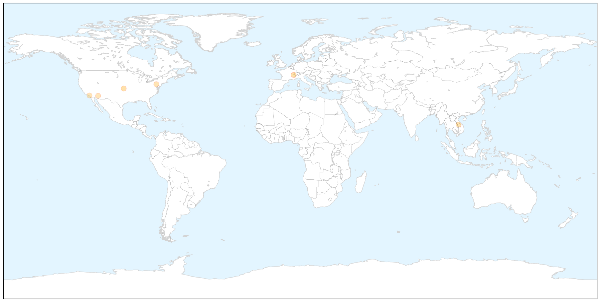

Unknown
30-Day Web Trend
0 alerts, 0 warnings

30-Day Twitter Trend
0 alerts, 0 warnings

Article Locations


Article Confidences

Top Articles:
- 0.917
- Chicago Tribune
- 0.917
- Chicago Tribune
- 0.917
- Chicago Tribune
- 0.886
- Drop in TB cases in Alappuzha
- 0.803
- Indiana takes CDC assistance to tackle HIV menace; 55 cases confirmed
- 0.784
- Medical researcher: Studies, data can prompt improvements in public health
- 0.769
- Dead crows put Sultanpur on avian flu alert
- 0.694
- Effectively fighting chronic diseases
- 0.639
- Somalia marks world Water day amid Water shortage in some part of the country
- 0.627
- Fundraiser For Lyme Disease Treatment
- 0.568
- Cyclone Pam: UNICEF flash alert #4 - Vanuatu
- 0.567
- MoH has ‘right to hire medicos from abroad’
- 0.538
- UN humanitarian chiefs condemn attacks on health facilities in Syria
- 0.514
- Attract and kill: trapping malaria mosquito mums before they lay eggs
- 0.509
- Children with congenital heart disease rising
- 0.504
- Sorry, deze pagina kon niet gevonden worden.
Top Tweets:
-
No tweets found for Mar 22, 2015
Measles
30-Day Web Trend
0 alerts, 0 warnings

30-Day Twitter Trend
3 alerts, 0 warnings

Article Locations

X

Article Confidences

Top Articles:
- 0.999
- WHO urges mass vaccination vs measles in Ebola areas
- 0.998
- WHO urges mass vaccination against measles, other diseases in Ebola areas
- 0.903
- Taiwan flight attendant is country’s 2nd rubella case; contact tracing ongoing
- 0.890
- Hospital superbug kills more people than measles; yet there's little outcry against doctors abusing antibiotics
- 0.841
- Dana Hills High School
- 0.807
- Measles PSA urges vaccines - azfamily.com 3TV
Top Tweets:
-
No tweets found for Mar 22, 2015